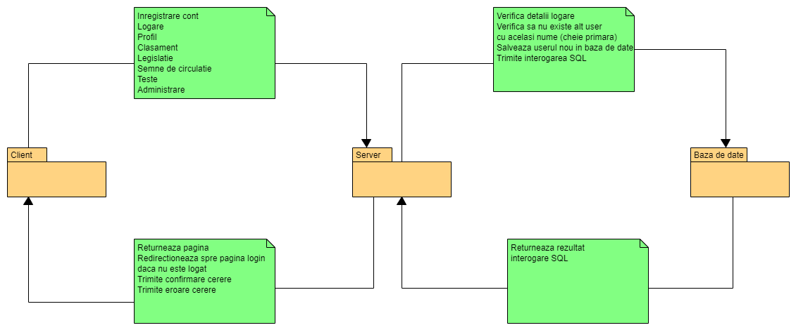
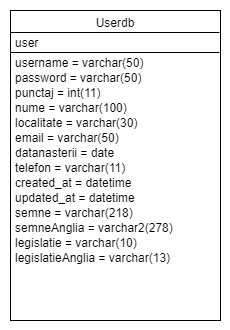
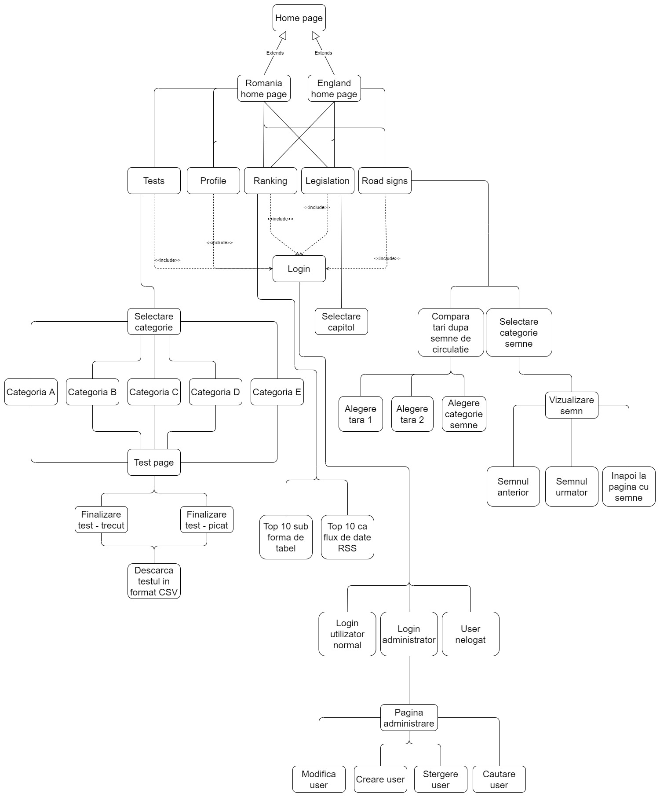

2. Tehnologii utilizate

Back-end: PHP.
Front-end: HTML, CSS, JavaScript, AJAX.
Baza de date: MySQL, phpMyAdmin.
Aplicatia TraST are scopul de a fi un mediu de invatare al legislatiei si al semnelor de circulatie al tarilor Romania si Anglia, compararea semnelor de circulatie a tarilor Romania, Austria, UK, Franta, Estonia, Danemarca si Cehia si realizarea testelor de dobandire a permisului de conducere in Romania.
Back-end: PHP.
Front-end: HTML, CSS, JavaScript, AJAX.
Baza de date: MySQL, phpMyAdmin.
La inceput, inainte de a incepe munca propriu-zisa la proiect am stabilit cum vom lucra asta insemnand stabilirea de deadline-uri pentru anumite etape, intalniri periodice pentru impartirea task-urilor, integrarea partilor proiectului si rezolvarea bug-urilor aparute pe parcurs. Pentru versionare am folosit platforma GitHub.
1. Dezvoltarea unei interfete grafice responsive. Interfata marcata în HTML5 si validata urmarind standardele Consortiului web. Crearea foilor de stiluri în CSS3.
2. Testare interfata grafica.
3. Crearea unei baze de date.
4. Functionalitatea paginilor clasament si profil, realizarea conexiunii cu baza de date si afisarea informatiilor corespunzatoare.
5. Crearea scraper-ului pentru legislatie si semne de circulatie pentru Romania si Anglia, modificarea informatiilor pentru a fi valide conform standardelor Consortiului web si afisare stilizata in pagina.
6. Functionalitate login, logout, afisare informatii profil, pagina administrare, interfata grafica dinamica (afisare buton login, logout, profil, administrare) in functie de rolul utilizatorului.
7. Crearea scraper-ului pentru pagina de teste, alegerea unui site si intelegerea acestuia pentru a putea prelua in timp real intrebarile testelor si imaginile atasate. Logica testului (test trecut, picat, alegere variante, verificare raspuns corect).
8. Creare sistemului de punctaj si stocarea in baza de date pentru paginile de legislatie, semne de circulatie si teste.
9. Creare paginii de administrare si functionalitatea acesteia, aceasta pagina poate fi accesata doar de administratorul aplicatiei. Permite realizarea operatiilor de tip CRUD.
10. Testing asupra integrarii, unitatilor.
11. Refactorizare.
12. Finalizarea si verificare documentatiei.
Diagrama Client-Server-Baza de date a aplicatei TraST

Diagrama structurii bazei de date a aplicatiei TraST

Diagrama structurii aplicatiei TraST

Interfata aplicatiei TraST


Baza de date este creata in mySQL cu ajutorul PHPmyAdmin.
Aplicatia ofera functionalitatile urmatoare: o interfata grafica usor de utilizat si atractiva. Utilizatorul are posibilitatea de a invata legislatia si semnele de circulatie din Romania sau Anglia, poate compara semnele de circulatie dintre mai multe tari pentru a vedea diferentele sau asemanarile, poate face teste pentru categoriile A-A1-A2-AM, B-B1, C-C1, D-D1, E, adica toate categoriile din Romania, la sfarsit poate vedea la care intrebari a raspuns corect cu ajutorul unui fisier de tip CSV, in acest fisier este stocat titlul intrebarii, variantele de raspuns si daca utilizatorul a raspuns corect sau nu la intrebare.